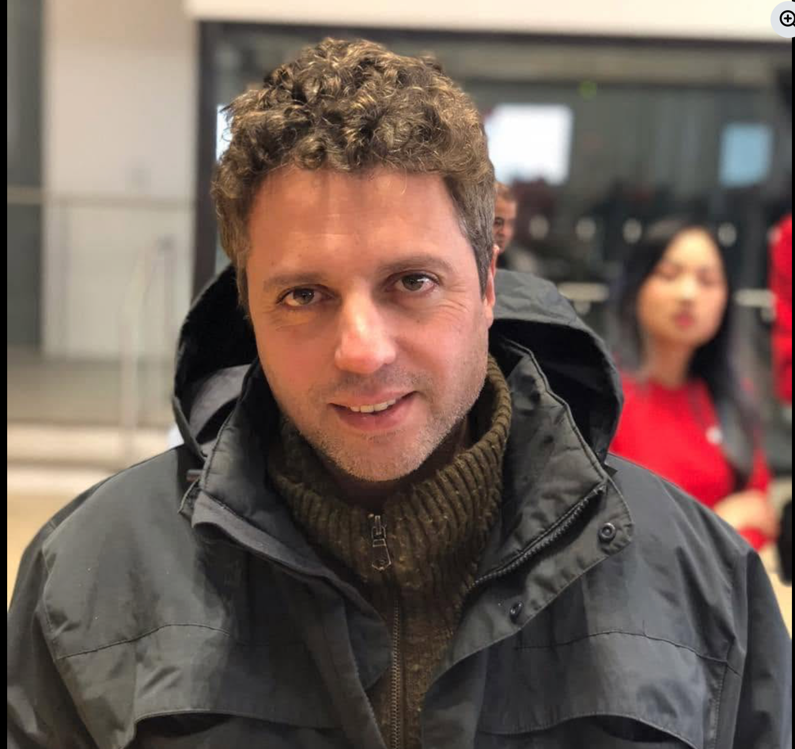

Torah · Hebrew & Aramaic · Movement
Aleph Dojo brings text study and martial discipline into one practice — built for synagogues, day schools, and families across NYC who want their kids and adults engaging with Torah in a way that moves.
Hebrew and Aramaic reading, taught the way a language is actually learned — out loud, in groups, with repetition.
Foundational martial arts — stance, breath, discipline — taught as a physical practice, not a performance.
Every session ties the two together: the text you studied is the thing your body just practiced holding onto.
The path
Instead of colored belts, students move through the Aleph-Bet itself — each letter is a stage of the program, tying language fluency and physical discipline to the same ladder.
Programs
Every track pairs language study with movement — the mix shifts by age group and setting.
A Sunday-school-friendly hour: Hebrew letters and first words, paired with basic martial arts stances and games. Built to run alongside existing religious school schedules.
A weekly teen track — text study moves into Aramaic and harder source material, movement moves into real technique and discipline. Built for kids who've outgrown Sunday school energy.
An evening adult class for people who never learned to read Hebrew fluently and want a physical outlet at the same time. No martial arts background required.
A drop-in family morning — parents and kids learn and move side by side. Designed as a synagogue community-building event as much as a class.
For synagogues & day schools
This is meant to sit inside your existing programming, not compete with it.
Gili meets with clergy or education staff to understand your community, your space, and your calendar.
One free trial class, on-site, so families and leadership can see the format before committing to anything.
A regular weekly or monthly slot, priced and scheduled around what actually works for your building.

Gili has spent years hosting free Shabbat dinners and building community across NYC through One Table Shabbat, and he's known across the city for showing up for people. Aleph Dojo is his next chapter — bringing the same hands-on, communal spirit to Torah study and movement.
Get started